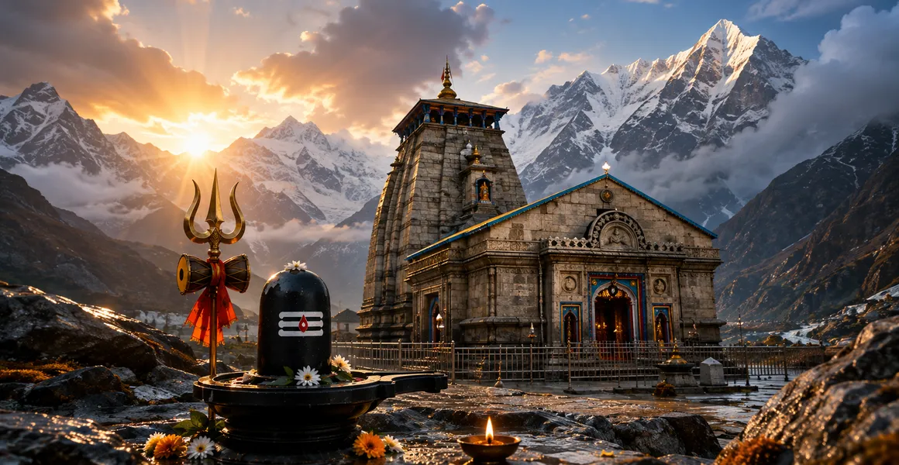

The Manifestation of Kedarnath
The thirteenth chapter of the Kotirudra Samhita narrates the majestic legend and divine appearance of the Kedarnath Jyotirlinga amidst the towering snow-clad peaks of the Himalayas.
It details the rigorous penance undertaken by the divine sages Nara and Narayana at Badarikashrama and the supreme blessing bestowed by Lord Shiva.
This chapter reveals how Kedarnath stands as an eternal sanctuary of spiritual liberation in the lap of the sacred mountains.
Chapter 13 Highlights
Himalayan Sanctuary
Kedarnath is enshrined in the majestic Himalayan heights beloved of ascetics.
Nara-Narayana's Penance
The divine sages performed intense austerity worshipping an earthen Shiva linga.
Divine Appearance
Lord Shiva manifested personally to fulfill the desires of His supreme devotees.
Permanent Abode
At the earnest request of the sages, Shiva agreed to reside permanently as Kedarnath.
Washing Away Sins
Pilgrimage and darshan at Kedarnath eradicate all accumulated karmic bonds.
Ultimate Liberation
Devotees attain direct spiritual union with the supreme consciousness of Shiva.
Core Topics in This Chapter
The Holy Setting of Badarikashrama and Himalayas
Chapter 13 begins by describing the serene and sublime environment of Badarikashrama in the Himalayan mountains, a region naturally resonant with spiritual energy.
It is here that great sages congregate to perform penance and seek communion with the divine source of the universe.
The Intense Austerity of Sages Nara and Narayana
The narrative highlights the divine sages Nara and Narayana, who engaged in rigorous spiritual disciplines and physical austerities for the welfare of the world.
Their devotion was absolute, transcending all dualities of pleasure and pain, heat and cold in the harsh mountain climate.
Worship of the Earthen Linga
During their penance, Nara and Narayana crafted an earthen linga of Lord Shiva daily, worshipping it with utmost reverence, Vedic hymns, and pure offerings.
Their heartfelt devotion charged the atmosphere with divine vibrations, drawing the attention of the Lord of Kailasa.
The Gracious Manifestation of Lord Shiva
Deeply pleased by the unwavering devotion and intense penance of the sages, Lord Shiva appeared before them in all His divine splendor.
The Lord offered them boons of their choice, praising their supreme dedication to righteousness and spiritual elevation.
The Sages' Petition for Permanent Abode
Instead of asking for personal boons, Nara and Narayana humbly requested Lord Shiva to reside permanently at Kedarnath for the liberation of all humanity.
Granting their selfless wish, Shiva established Himself as the Kedarnath Jyotirlinga, promising eternal grace to all pilgrims.
The Supreme Spiritual Glory of Kedarnath
The text extols Kedarnath as a supreme tirtha where every pilgrim who undertakes the arduous journey is cleansed of all sins.
Worshipping Kedarnath confers spiritual illumination, inner strength, and ultimate oneness with the divine consciousness.
Transition to Chapter 14
Having established the divine origin and glorious manifestation of Kedarnath in the Himalayas, the narrative transitions smoothly to Chapter 14.
Readers are guided forward to explore the powerful legend and manifestation of Bhimashankara Jyotirlinga.
Key Teachings of Chapter 13
Power of Austerity
Rigorous spiritual discipline draws the direct presence of the Divine.
Selfless Prayer
True sages seek the welfare of all humanity rather than personal boons.
Himalayan Sanctity
Mountain environments foster deep introspection and spiritual awakening.
Earthen Devotion
Pure intent matters far more than material grandeur in worship.
Eternal Grace
Kedarnath remains an everlasting source of liberation for pilgrims.
Union with Shiva
Devotion at Kedarnath dissolves ego and merges the soul with Shiva.
Spiritual Reflection
The manifestation of Kedarnath teaches us that spiritual heights are attained only through perseverance, purity, and selfless love for all. When the sages Nara and Narayana prayed for humanity rather than themselves, they anchored divine grace in the high Himalayas forever. Kedarnath stands as a timeless reminder that weathering life's freezing trials with devotion brings us face to face with the eternal Lord.
Living the Message of Chapter 13
Cultivate resilience in your spiritual practice, enduring life's challenges with steady devotion to Lord Shiva.
Incorporate selflessness into your prayers, wishing for the upliftment and peace of all living beings.
Seek moments of quiet solitude to connect with the inner divine presence, mirroring the peaceful austerity of the sages.
Key Spiritual Concepts
The lord of the field of liberation, enshrined in the high Himalayas.
The divine twin sages whose penance established the sacred shrine.
The sacred Himalayan hermitage renowned for intense spiritual austerity.
An earthen Shiva linga crafted daily by sincere worshippers.
Rigorous spiritual discipline performed amidst mountain peaks.
The complete erasure of accumulated sins through sacred pilgrimage.
Chapter Summary
Kotirudra Samhita Chapter 13 recounts the divine legend of Kedarnath. When the sages Nara and Narayana performed rigorous penance and worshipped an earthen linga at Badarikashrama, Lord Shiva appeared and established Himself permanently as Kedarnath at their request. This Himalayan sanctuary continues to wash away sins and grant liberation, paving the way for the exploration of Bhimashankara in Chapter 14.
Kotirudra Samhita Chapter 13 recounts the divine legend of Kedarnath. When the sages Nara and Narayana performed rigorous penance and worshipped an earthen linga at Badarikashrama, Lord Shiva appeared and established Himself permanently as Kedarnath at their request. This Himalayan sanctuary continues to wash away sins and grant liberation, paving the way for the exploration of Bhimashankara in Chapter 14.
Frequently Asked Questions
1. What is the main subject of Kotirudra Samhita Chapter 13?
Chapter 13 details the sacred legend, penance of sages Nara-Narayana, and the divine manifestation of Kedarnath Jyotirlinga in the Himalayas.
2. Who performed penance at Badarikashrama according to this chapter?
The divine sages Nara and Narayana performed rigorous penance worshipping an earthen linga of Lord Shiva.
3. How did Lord Shiva manifest as Kedarnath?
Pleased with the devotion of Nara and Narayana, Lord Shiva manifested permanently as Kedarnath to bless humanity and grant spiritual liberation.
4. What is the spiritual significance of Kedarnath Jyotirlinga?
Kedarnath represents the supreme Himalayan abode of liberation, washing away all sins and granting union with Shiva.
5. How does Chapter 13 connect to the surrounding chapters?
Chapter 13 follows Chapter 12 (The Sacred Omkareshvara) and precedes Chapter 14 (The Divine Power of Bhimashankara).
6. What is the core spiritual takeaway of this chapter?
Rigorous spiritual austerity combined with pure devotion to Lord Shiva conquers all obstacles and secures divine presence.
“Enshrined in the majestic Himalayas through the penance of Nara-Narayana, Kedarnath grants eternal liberation to all devotees.”
Continue Through Kotirudra Samhita
Chapter 13 explores the manifestation of Kedarnath. Continue to Chapter 14, The Divine Power of Bhimashankara.